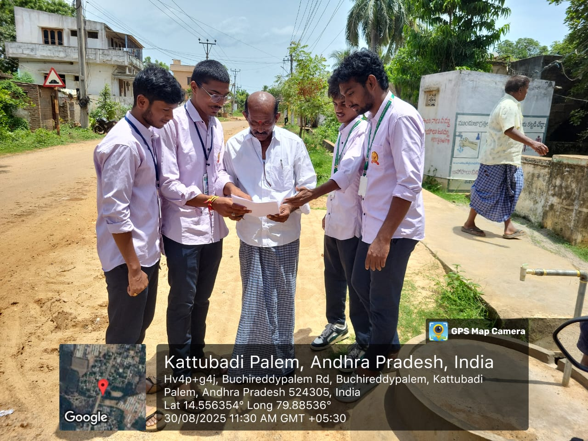
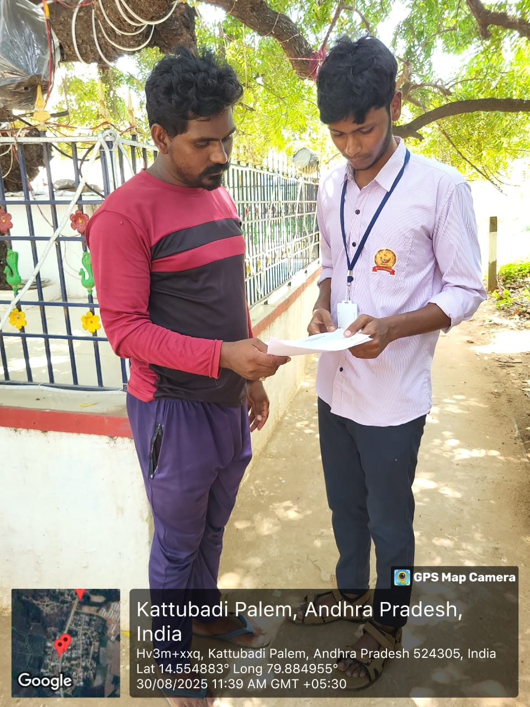

WEEKLY REPORT
WEEK – 3 (From 27-05-24 to 01-06-24)
Objective: Survey on the Range of Awareness of Internet Usage in Village
Detailed Report
Day 1: Access to Information and Education
- Farmers can access the latest agricultural research, techniques, and trends.
- Online courses and tutorials can teach new farming methods and crop management practices.
- Weather forecasts and alerts help in planning agricultural activities.
Day 2: Market Access and Better Pricing
- Farmers can check current market prices for their produce, ensuring they get fair rates.
- Online marketplaces allow direct selling to consumers or buyers, eliminating middlemen.
- E-commerce platforms provide a broader customer base, increasing sales opportunities.
Day 3: Efficient Farm Management
- Digital tools and applications help in tracking crop growth, soil health, and pest management.
- Precision agriculture techniques, supported by data from the internet, optimize resource usage (water, fertilizers).
- Record-keeping software helps manage finances, inventories, and farm operations more efficiently.
Day 4: Sustainable Digital Farming
- Adoption of smart farming apps for soil testing and crop health monitoring.
- Use of mobile tools to manage irrigation schedules and resource optimization.
Day 5: Access to Government Services and Subsidies
- Farmers can apply for government schemes, subsidies, and loans online.
- Information on agricultural policies and support programs is readily available.
- Online portals provide access to essential documents and certifications.
Day 6: Utilizing Online Resources
- Explored agricultural websites, government portals, and educational platforms.
- Joined online communities and forums dedicated to farming and agriculture.

